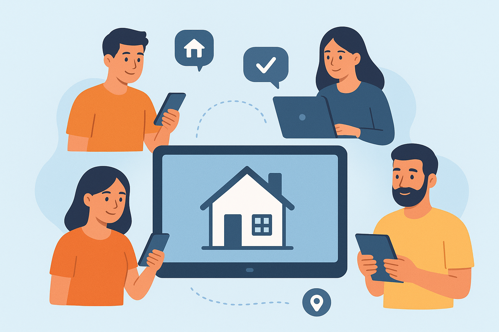

Educação
Conectar pessoas que precisam da educação através da estruturação de sites para ONGs que promovem a educação, divulgando projetos que transformam vidas e ampliam oportunidades.
Conectar pessoas que precisam da educação através da estruturação de sites para ONGs que promovem a educação, divulgando projetos que transformam vidas e ampliam oportunidades.
Nosso projeto divulga ONGs que combatem a fome e promovem a alimentação solidária, unindo quem pode ajudar a quem mais precisa.

Nosso projeto conexão moradia apoia ONGs que garantem moradia digna, conectando voluntários e doadores a projetos que constroem esperança e novos começos.
Você pode participar como voluntário ou fazer uma doação.